Centre of the Bend
Bending Large Diameter Conduit - " to "
To bend larger diameter conduit with an 'hour clock' bender for example one can use a method that I know as: 'Centre of the Bend'.
For bending " to " one can use the suggestions from the Hand Bending portion of this chapter.
The following are the steps, in a read-do checklist format that I follow each time for best results
Step-1: Mark the front of the 'shoe' on a straight piece of conduit appropriate for the job.
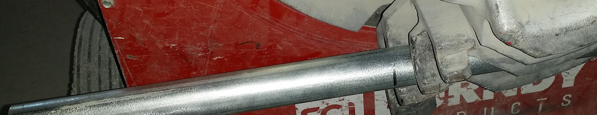
Step-2: Bend to an angle of your choice that will allow enough distance between bends based of the amount to offset. Example for an offset of 5" with a 2" conduit, I would choose an angle below . Remember the angle which you have chosen.
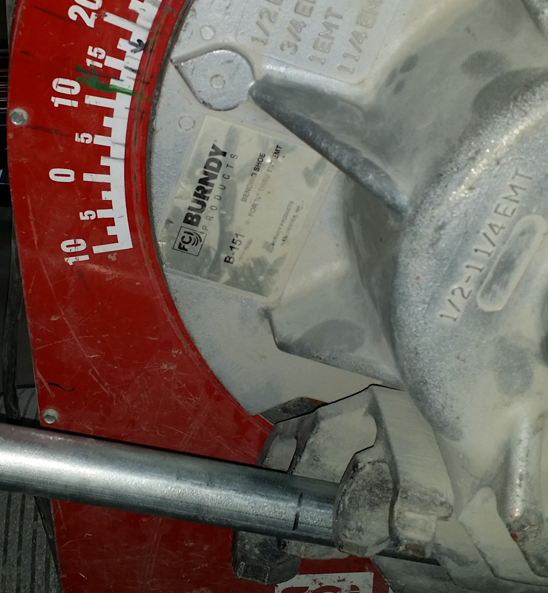
Step-3: Find the centre of that bend using a straight edge (I use my level). This is accomplished by placing the straight edge parallel to each inside edges of the bend, which will form an 'X'; this marks the centre of the bend. This is that part in a movie where an actor says that title!
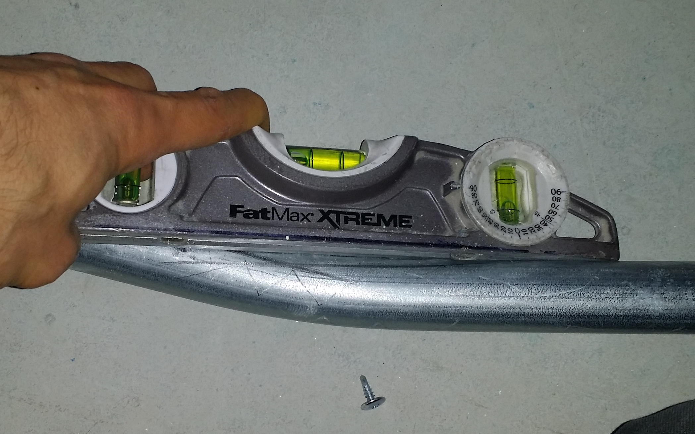
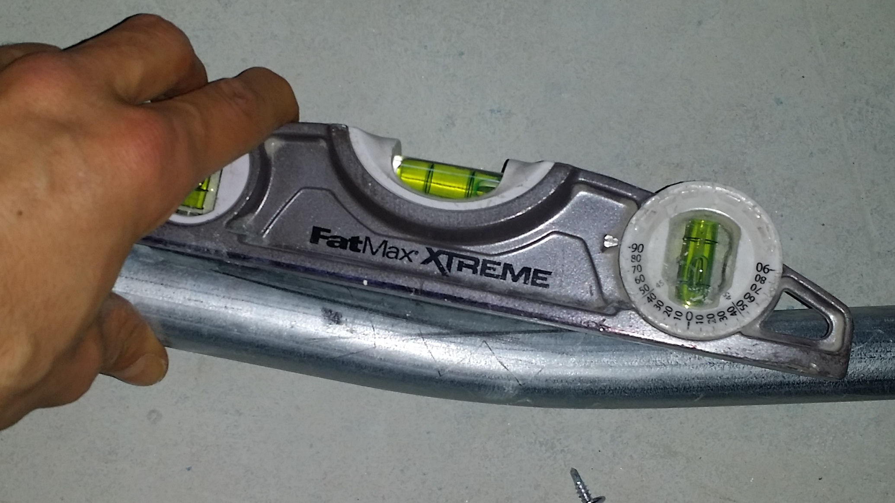
Step-4: Measure the distance from the first mark (the front of the shoe) and the centre of the bend mark. Place a mark, .
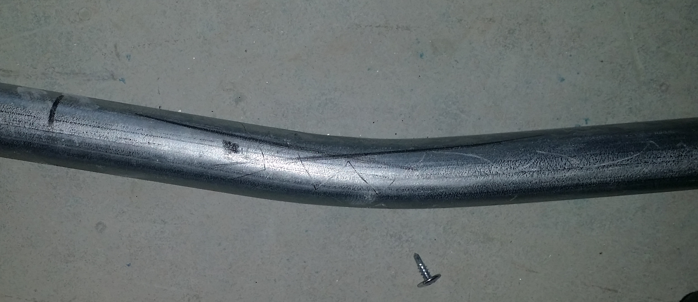
Step-5: Place a long straight edge parallel to the outside edge of the bend on the short end side and measure the required offset distance from that straight edge to the conduit. Place a mark, .
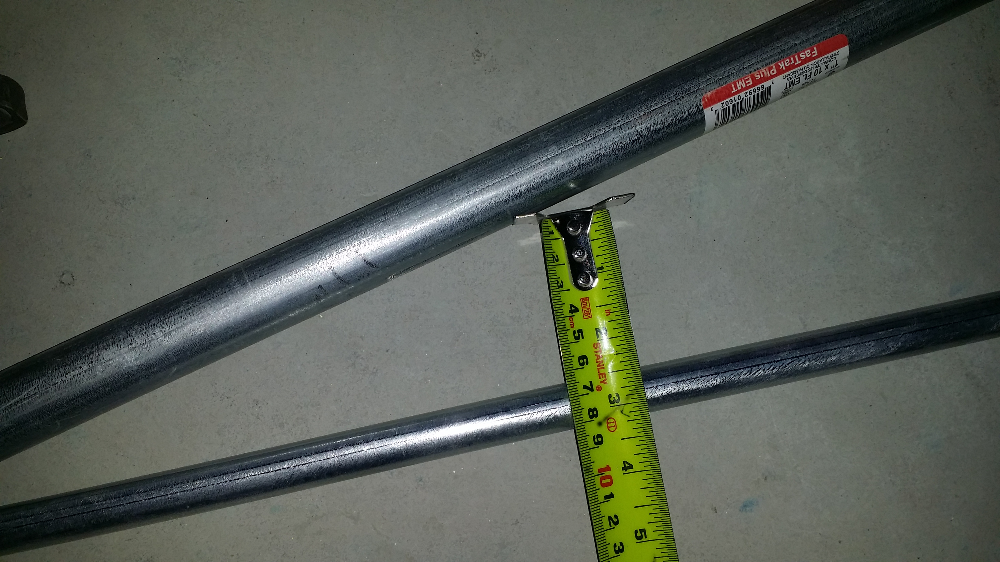
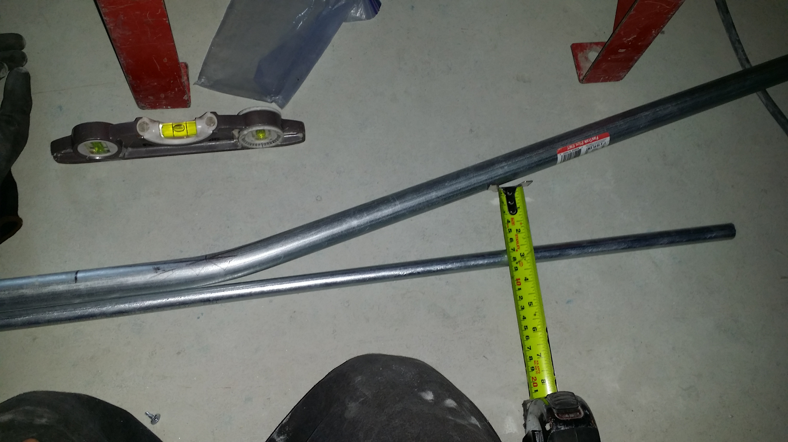
Step-6: Using the distance found in step-4 , measure back toward the bend from the mark made in step-5. Place a mark, .
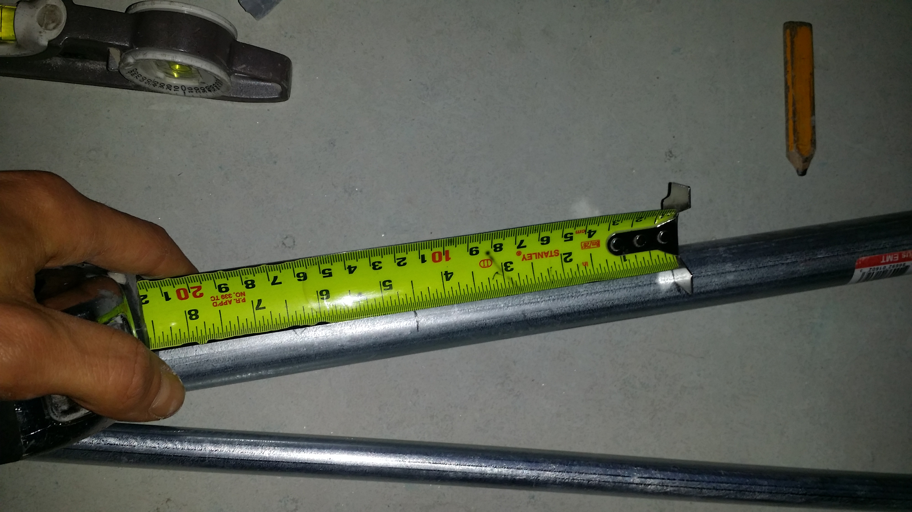
Step-7: Place the conduit back in the bender placing the mark made in step-6 inline with the front of the shoe.
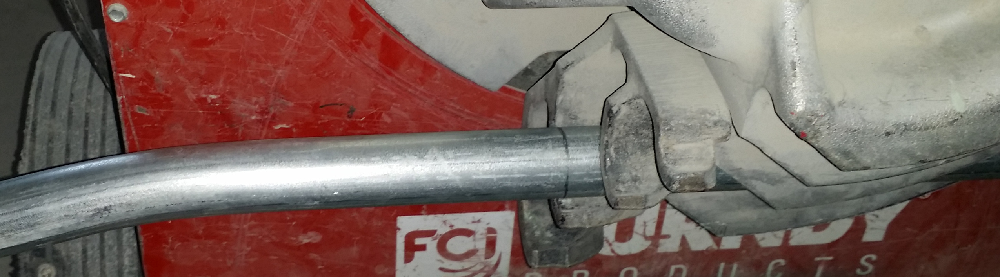
Step-8: Bend back to the original angle from step-2. This is where fine touch comes in with the button on the bending machine.
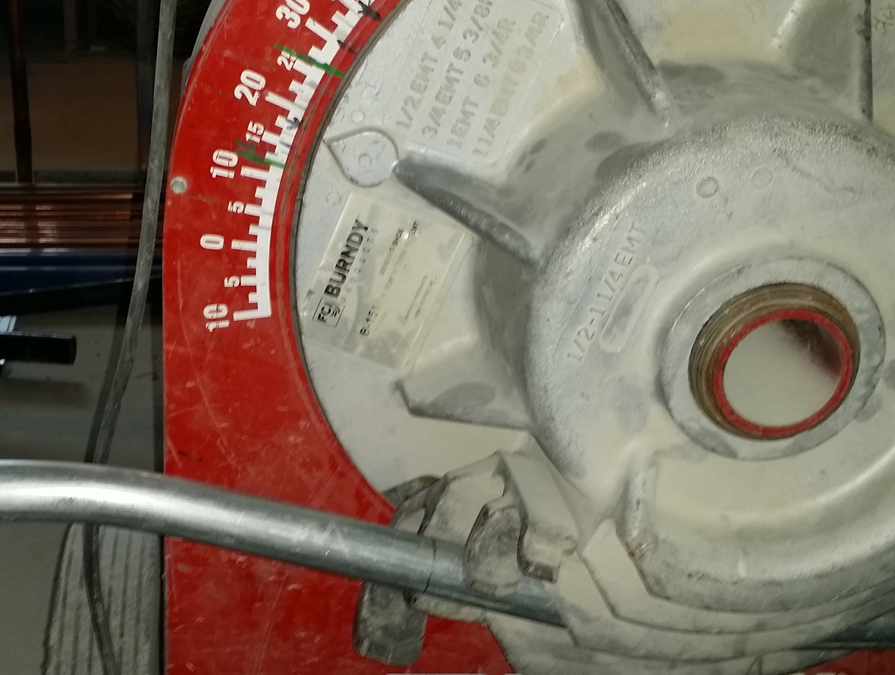
Step-9: Check your work and see how you did. In the picture I have my desired offset distance but the level is off slightly; cannot always be perfect.
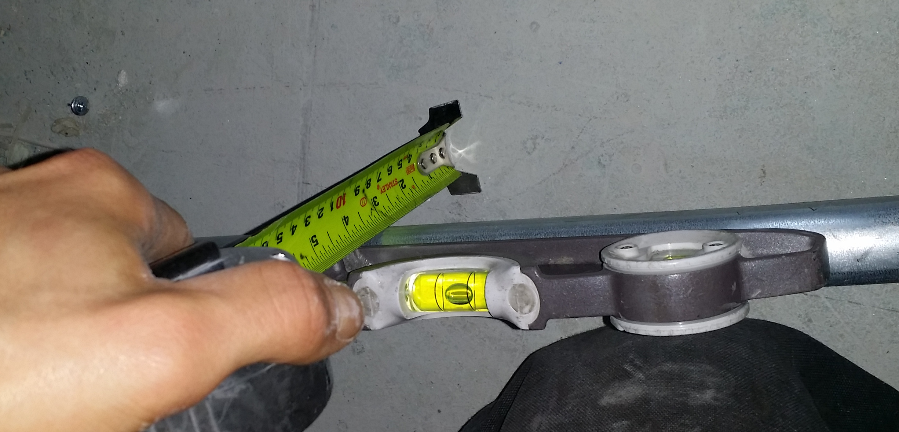